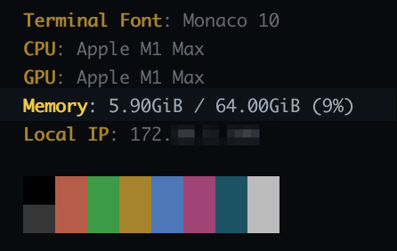
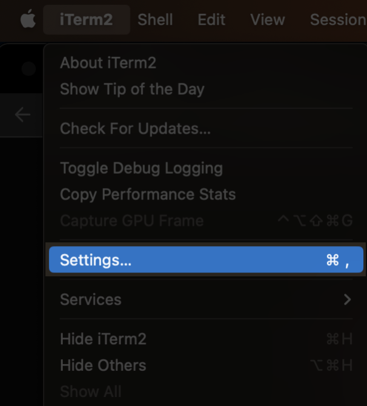
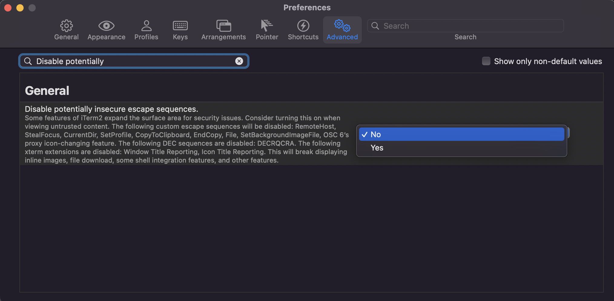
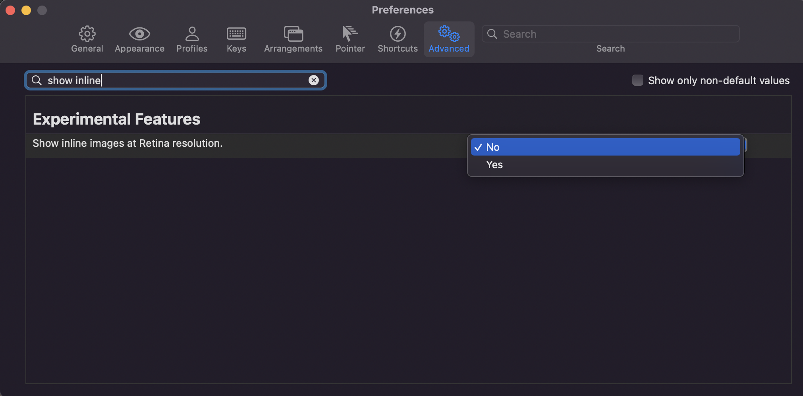

neofetch로 터미널 꾸미기
개요
neofetch를 사용해서 터미널에 좋아하는 사진을 걸어놓는 방법을 소개합니다. 이 글은 터미널 프로그램으로 iTerm2를 사용하는 환경 기준으로 설명합니다.
neofetch를 사용하면 자신이 좋아하는 이미지를 걸어서 터미널을 꾸밀 수 있고, 터미널을 열 때마다 시스템 스펙과 상세정보를 자동 확인할 수 있는 장점이 있습니다.
저는 최근에 neofetch로 스티브 잡스와 빈 방 사진을 출력해서 쓰고 있습니다.

환경
- OS : macOS Ventura 13.6 (M1 Max)
- Shell : zsh + oh-my-zsh
- neofetch 7.1.0
- brew로 설치
- iTerm2 3.4.20
- brew로 설치
준비사항
사용자 로컬 환경
brew와 iTerm2 설치 방법은 이 글의 주제를 벗어나는 내용이기 때문에 생략합니다.
사용방법
neofetch 설치
패키지 관리자인 brew를 이용해서 neofetch를 설치합니다.
$ brew install neofetch
imagemagick 설치
이미지 렌더링에 필요한 imagemagick도 설치합니다.
$ brew install imagemagick
imagemagick는 디지털 이미지를 생성, 편집, 구성 또는 변환하는 플러그인입니다. PNG, JPEG, GIF, WebP, HEIC, SVG, PDF, DPX, EXR 및 TIFF를 포함한 다양한 확장자(200개 이상)의 이미지를 읽고 쓸 수 있습니다.
neofetch 명령어가 잘 동작하는 지 확인합니다.
$ which neofetch
/opt/homebrew/bin/neofetch
$ neofetch --version
Neofetch 7.1.0
현재 Neofetch 7.1.0이 설치된 상태입니다.
소스 이미지 준비
neofetch에서 사용할 이미지 파일을 인터넷에서 검색한 후 다운로드 받습니다.
neofetch에서 사용할 수 있는 이미지 확장자
.jpg, .jpeg, .png, .webp 확장자 모두 정상 동작합니다.
이후 neofetch 경로 안에 띄울 이미지를 보관할 전용 디렉토리를 만듭니다.
$ mkdir -p ~/.config/neofetch/images
준비한 이미지 파일을 mv 명령어 또는 finder 탐색기를 통해서 ~/.config/neofetch/images/ 경로에 옮깁니다.
$ tree ~/.config/neofetch
/Users/younsung.lee/.config/neofetch
├── config.conf
└── images
└── steve-jobs.jpg
2 directories, 2 files
저같은 경우는 보기만 해도 마음이 편안해지는 스티브 잡스와 빈 방 사진을 준비했습니다.
neofetch 설정파일인 config.conf를 수정합니다.
$ vi ~/.config/neofetch/config.conf
이미지 소스 설정
Neofetch 설정파일 config.conf에서 이미지 관련 설정을 먼저 아래와 같이 설정합니다.
# ~/.config/neofetch/config.conf
# default value is "ascii"
image_backend="iterm2"
...
# NOTE: 'auto' will pick the best image source for whatever image backend is used.
# In ascii mode, distro ascii art will be used and in an image mode, your
# wallpaper will be used.
image_source="/사용할/이미지/절대/경로.jpg"
...
# default value is "auto"
image_size="auto"
각 설정값에 대한 상세 설명입니다.
- 이미지를 그릴 백엔드 :
image_backend값을ascii(기본값)에서iterm2로 변경합니다. - 이미지 소스 경로 :
image_source값을 이미지 파일이 위치한 절대경로로 변경합니다. - 이미지 크기 : 이미지가 출력될 크기를 지정합니다.
auto(기본값)로 설정된 경우 이미지는 터미널 전체의 절반을 차지하게 됩니다. 픽셀 절대값400px또는 퍼센트 비율30%로도 설정이 가능합니다.
image_source 값 설정 시 주의사항
image_source값의 경우 무조건 절대경로를 써야 합니다.~/.config/neofetch/images/test.jpg같이 상대경로~를 사용하면 이미지 로드에 실패합니다.- 이미지 파일 경로에
$HOME환경변수가 포함되는 건 가능합니다.
메모리 표기 설정
메모리 사용률 표기 관련하여 2가지 설정을 변경합니다.
- 메모리 사용률 퍼센트 표기 :
memory_percent를off(기본값)에서on으로 변경합니다. - 메모리 단위 표기 :
memory_unit을mib(기본값)에서gib로 변경해서 사람이 좀 더 이해하기 쉽게 변경합니다.
# ~/.config/neofetch/config.conf
# Show memory pecentage in output.
#
# Default: 'off'
# Values: 'on', 'off'
# Flag: --memory_percent
#
# Example:
# on: '1801MiB / 7881MiB (22%)'
# off: '1801MiB / 7881MiB'
memory_percent="on"
# Change memory output unit.
#
# Default: 'mib'
# Values: 'kib', 'mib', 'gib'
# Flag: --memory_unit
#
# Example:
# kib '1020928KiB / 7117824KiB'
# mib '1042MiB / 6951MiB'
# gib: ' 0.98GiB / 6.79GiB'
memory_unit="gib"
memory_percent와 memory_unit 설정을 적용한 결과입니다.

neofetch 설정파일에서 이미지 관련 설정 정보를 마지막으로 확인합니다.
$ cat -n ~/.config/neofetch/config.conf \
| egrep 'image_size=|image_source=|image_backend'
697 image_backend="iterm2"
711 image_source="$HOME/.config/neofetch/images/steve-jobs.jpg"
829 image_size="auto"
위 설정처럼 image_source 경로에 $HOME 환경변수가 들어간 경우, 로컬 환경에 $HOME 환경변수가 제대로 설정되어 있어야 이미지를 정상적으로 불러올 수 있습니다.
echo 명령어를 실행해서 $HOME 환경변수가 설정되어 있는지 미리 확인할 수 있습니다.
$ echo $HOME
/Users/younsung.lee
Visual Studio Code를 사용할 경우, code 명령어로 IDE를 실행하면서 지정한 설정파일을 띄울 수 있습니다.
$ code ~/.config/neofetch/config.conf
iTerm2 최적화 설정
neofetch 이미지가 출력될 때 iTerm2에서 간격이 크게 벌어지는 문제가 발생합니다.
이를 해결하기 위해 iTerm2에서 2가지 설정을 변경해야 합니다.
첫번째 설정
왼쪽 위에 있는 메뉴바 → iTerm2 → Settings... 클릭

Settings... 메뉴를 클릭하면 iTerm2 설정창이 열립니다.
Preferences → Advanced → 검색창 → Disable potentially insecure escape sequences → No로 설정

두번째 설정
Preferences → Advanced → 검색창 → Show inline images at retina resolution → No로 설정

이제 neofetch를 사용할 준비가 되었습니다.
neofetch 자동 적용
zsh 설정파일인 .zshrc의 마지막 라인에 neofetch를 실행하도록 아래 라인을 추가합니다.
$ vi ~/.zshrc
neofetch
이제 iTerm2 터미널을 열 때마다 neofetch 명령어가 실행되면서 설정파일에 지정된 이미지를 불러옵니다.
테스트
iTerm2를 최초로 실행하거나 탭을 새로 생성할 때마다 제가 지정한 이미지가 터미널에 출력됩니다.
보기만 해도 마음이 평온해지는 사진입니다.
여러분들은 neofetch 덕분에 좋아하는 사진을 터미널에서 자주 보기 때문에, 개발 생산성이 향상되고 편안한 마음으로 코딩에 집중할 수 있습니다.
자신이 지정한 사진이 중간중간 보고싶다면 neofetch 명령어를 직접 실행해도 이미지가 나옵니다.
참고:
위 터미널에서 사진 아래쪽에 같이 출력되는 명언이나 구절은 fortune이라는 툴을 사용했습니다. fortune도 neofetch와 동일하게 zsh에 설정해서 사용할 수 있습니다.
fortune에 관심 있으신 분들은 zsh 플러그인 설치 페이지를 참고하세요.
트러블슈팅 가이드
neofetch의 이미지 출력에 문제가 있는 경우, neofetch 로그를 상세하게 출력하면 트러블슈팅 할 때 로그를 통해 좀 더 쉽게 문제 원인을 찾을 수 있습니다.
$ neofetch --help
...
OTHER:
--config /path/to/config Specify a path to a custom config file
--config none Launch the script without a config file
--no_config Don't create the user config file.
--print_config Print the default config file to stdout.
--stdout Turn off all colors and disables any ASCII/image backend.
--help Print this text and exit
--version Show neofetch version
-v Display error messages.
-vv Display a verbose log for error reporting.
...
verbose 옵션
-v 옵션 또는 -vv 옵션을 사용해서 상세한 로그를 출력합니다.
$ neofetch --iterm2 /path/to/image/ \
--size 400 \
-v
...
[!] Config: Sourced user config. (/Users/younsung.lee/.config/neofetch/config.conf)
[!] Image: Using image ''
[!] Image: '' doesn't exist, falling back to ascii mode.
[!] Info: Couldn't detect Theme.
[!] Info: Couldn't detect Icons.
[!] Neofetch command: /opt/homebrew/bin/neofetch -v --iterm2 /path/to/image/
[!] Neofetch version: 7.1.0
참고자료
younsl/dotfiles
제가 현재 사용중인 neofetch 설정파일입니다.
설정하실 때 예시로 참고 삼아 보시면 도움이 될 것 같습니다.